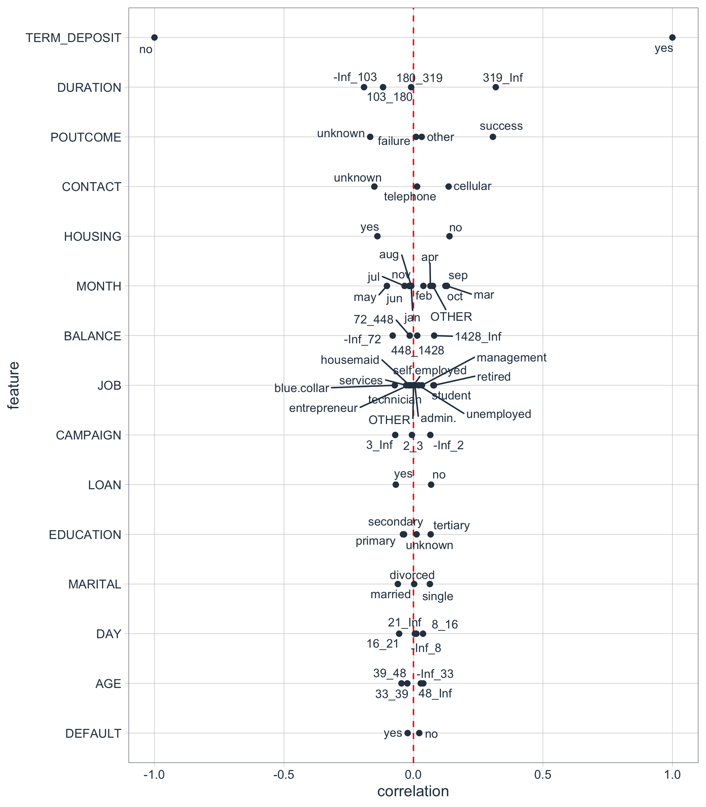
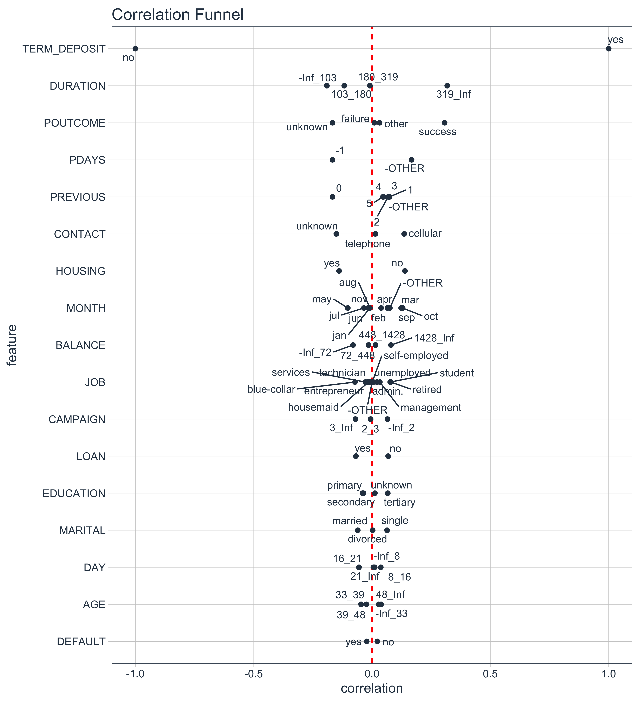
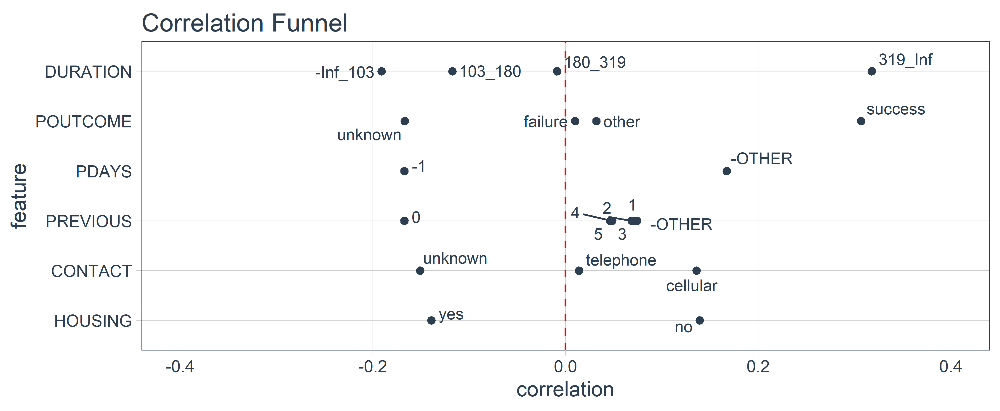

Speed Up Exploratory Data Analysis (EDA)
The goal of correlationfunnel is to speed up Exploratory Data Analysis (EDA). Here’s how to use it.
Installation
You can install the latest stable (CRAN) version of correlationfunnel with:
install.packages("correlationfunnel")
You can install the development version of correlationfunnel from GitHub with:
devtools::install_github("business-science/correlationfunnel")
Correlation Funnel in 2-Minutes
Problem: Exploratory data analysis (EDA) involves looking at feature-target relationships independently. This process is very time consuming even for small data sets. Rather than search for relationships, what if we could let the relationships come to us?

Solution: Enter correlationfunnel. The package provides a succinct workflow and interactive visualization tools for understanding which features have relationships to target (response).
Main Benefits:
Speeds Up Exploratory Data Analysis
Improves Feature Selection
Gets You To Business Insights Faster
Example - Bank Marketing Campaign
The following example showcases the power of fast exploratory correlation analysis. The goal of the analysis is to determine which features relate to the bank’s marketing campaign goal of having customers opt into a TERM DEPOSIT (financial product).
We will see that using 3 functions, we can quickly:
Transform the data into a binary format with
binarize()Perform correlation analysis using
correlate()Visualize the highest correlation features using
plot_correlation_funnel()
Result: Rather than spend hours looking at individual plots of capaign features and comparing them to which customers opted in to the TERM DEPOSIT product, in seconds we can discover which groups of customers have enrolled, drastically speeding up EDA.
Getting Started
First, load the libraries.
Next, collect data to analyze. We’ll use Marketing Campaign Data for a Bank that was popularized by the UCI Machine Learning Repository. We can load the data with data("marketing_campaign_tbl").
# Use ?marketing_campagin_tbl to get a description of the marketing campaign features data("marketing_campaign_tbl") marketing_campaign_tbl %>% glimpse() #> Observations: 45,211 #> Variables: 18 #> $ ID <chr> "2836", "2837", "2838", "2839", "2840", "2841", "28… #> $ AGE <dbl> 58, 44, 33, 47, 33, 35, 28, 42, 58, 43, 41, 29, 53,… #> $ JOB <chr> "management", "technician", "entrepreneur", "blue-c… #> $ MARITAL <chr> "married", "single", "married", "married", "single"… #> $ EDUCATION <chr> "tertiary", "secondary", "secondary", "unknown", "u… #> $ DEFAULT <chr> "no", "no", "no", "no", "no", "no", "no", "yes", "n… #> $ BALANCE <dbl> 2143, 29, 2, 1506, 1, 231, 447, 2, 121, 593, 270, 3… #> $ HOUSING <chr> "yes", "yes", "yes", "yes", "no", "yes", "yes", "ye… #> $ LOAN <chr> "no", "no", "yes", "no", "no", "no", "yes", "no", "… #> $ CONTACT <chr> "unknown", "unknown", "unknown", "unknown", "unknow… #> $ DAY <dbl> 5, 5, 5, 5, 5, 5, 5, 5, 5, 5, 5, 5, 5, 5, 5, 5, 5, … #> $ MONTH <chr> "may", "may", "may", "may", "may", "may", "may", "m… #> $ DURATION <dbl> 261, 151, 76, 92, 198, 139, 217, 380, 50, 55, 222, … #> $ CAMPAIGN <dbl> 1, 1, 1, 1, 1, 1, 1, 1, 1, 1, 1, 1, 1, 1, 1, 1, 1, … #> $ PDAYS <dbl> -1, -1, -1, -1, -1, -1, -1, -1, -1, -1, -1, -1, -1,… #> $ PREVIOUS <dbl> 0, 0, 0, 0, 0, 0, 0, 0, 0, 0, 0, 0, 0, 0, 0, 0, 0, … #> $ POUTCOME <chr> "unknown", "unknown", "unknown", "unknown", "unknow… #> $ TERM_DEPOSIT <chr> "no", "no", "no", "no", "no", "no", "no", "no", "no…
Response & Predictor Relationships
Modeling and Machine Learning problems often involve a response (Enrolled in TERM_DEPOSIT, yes/no) and many predictors (AGE, JOB, MARITAL, etc). Our job is to determine which predictors are related to the response. We can do this through Binary Correlation Analysis.
Binary Correlation Analysis
Binary Correlation Analysis is the process of converting continuous (numeric) and categorical (character/factor) data to binary features. We can then perform a correlation analysis to see if there is predictive value between the features and the response (target).
Step 1: Convert to Binary Format
The first step is converting the continuous and categorical data into binary (0/1) format. We de-select any non-predictive features. The binarize() function then converts the features into binary features.
Numeric Features: Are binned into ranges or if few unique levels are binned by their value, and then converted to binary features via one-hot encoding
Categorical Features: Are binned by one-hot encoding
The result is a data frame that has only binary data with columns representing the bins that the observations fall into. Note that the output is shown in the glimpse() format. THere are now 80 columns that are binary (0/1).
marketing_campaign_binarized_tbl <- marketing_campaign_tbl %>% select(-ID) %>% binarize(n_bins = 4, thresh_infreq = 0.01) marketing_campaign_binarized_tbl %>% glimpse() #> Observations: 45,211 #> Variables: 74 #> $ `AGE__-Inf_33` <dbl> 0, 0, 1, 0, 1, 0, 1, 0, 0, 0, 0, 1, 0, 0, 0… #> $ AGE__33_39 <dbl> 0, 0, 0, 0, 0, 1, 0, 0, 0, 0, 0, 0, 0, 0, 0… #> $ AGE__39_48 <dbl> 0, 1, 0, 1, 0, 0, 0, 1, 0, 1, 1, 0, 0, 0, 0… #> $ AGE__48_Inf <dbl> 1, 0, 0, 0, 0, 0, 0, 0, 1, 0, 0, 0, 1, 1, 1… #> $ JOB__admin. <dbl> 0, 0, 0, 0, 0, 0, 0, 0, 0, 0, 1, 1, 0, 0, 0… #> $ `JOB__blue-collar` <dbl> 0, 0, 0, 1, 0, 0, 0, 0, 0, 0, 0, 0, 0, 0, 0… #> $ JOB__entrepreneur <dbl> 0, 0, 1, 0, 0, 0, 0, 1, 0, 0, 0, 0, 0, 0, 0… #> $ JOB__housemaid <dbl> 0, 0, 0, 0, 0, 0, 0, 0, 0, 0, 0, 0, 0, 0, 0… #> $ JOB__management <dbl> 1, 0, 0, 0, 0, 1, 1, 0, 0, 0, 0, 0, 0, 0, 0… #> $ JOB__retired <dbl> 0, 0, 0, 0, 0, 0, 0, 0, 1, 0, 0, 0, 0, 0, 0… #> $ `JOB__self-employed` <dbl> 0, 0, 0, 0, 0, 0, 0, 0, 0, 0, 0, 0, 0, 0, 0… #> $ JOB__services <dbl> 0, 0, 0, 0, 0, 0, 0, 0, 0, 0, 0, 0, 0, 0, 1… #> $ JOB__student <dbl> 0, 0, 0, 0, 0, 0, 0, 0, 0, 0, 0, 0, 0, 0, 0… #> $ JOB__technician <dbl> 0, 1, 0, 0, 0, 0, 0, 0, 0, 1, 0, 0, 1, 1, 0… #> $ JOB__unemployed <dbl> 0, 0, 0, 0, 0, 0, 0, 0, 0, 0, 0, 0, 0, 0, 0… #> $ `JOB__-OTHER` <dbl> 0, 0, 0, 0, 1, 0, 0, 0, 0, 0, 0, 0, 0, 0, 0… #> $ MARITAL__divorced <dbl> 0, 0, 0, 0, 0, 0, 0, 1, 0, 0, 1, 0, 0, 0, 0… #> $ MARITAL__married <dbl> 1, 0, 1, 1, 0, 1, 0, 0, 1, 0, 0, 0, 1, 1, 1… #> $ MARITAL__single <dbl> 0, 1, 0, 0, 1, 0, 1, 0, 0, 1, 0, 1, 0, 0, 0… #> $ EDUCATION__primary <dbl> 0, 0, 0, 0, 0, 0, 0, 0, 1, 0, 0, 0, 0, 0, 0… #> $ EDUCATION__secondary <dbl> 0, 1, 1, 0, 0, 0, 0, 0, 0, 1, 1, 1, 1, 0, 1… #> $ EDUCATION__tertiary <dbl> 1, 0, 0, 0, 0, 1, 1, 1, 0, 0, 0, 0, 0, 0, 0… #> $ EDUCATION__unknown <dbl> 0, 0, 0, 1, 1, 0, 0, 0, 0, 0, 0, 0, 0, 1, 0… #> $ DEFAULT__no <dbl> 1, 1, 1, 1, 1, 1, 1, 0, 1, 1, 1, 1, 1, 1, 1… #> $ DEFAULT__yes <dbl> 0, 0, 0, 0, 0, 0, 0, 1, 0, 0, 0, 0, 0, 0, 0… #> $ `BALANCE__-Inf_72` <dbl> 0, 1, 1, 0, 1, 0, 0, 1, 0, 0, 0, 0, 1, 1, 0… #> $ BALANCE__72_448 <dbl> 0, 0, 0, 0, 0, 1, 1, 0, 1, 0, 1, 1, 0, 0, 1… #> $ BALANCE__448_1428 <dbl> 0, 0, 0, 0, 0, 0, 0, 0, 0, 1, 0, 0, 0, 0, 0… #> $ BALANCE__1428_Inf <dbl> 1, 0, 0, 1, 0, 0, 0, 0, 0, 0, 0, 0, 0, 0, 0… #> $ HOUSING__no <dbl> 0, 0, 0, 0, 1, 0, 0, 0, 0, 0, 0, 0, 0, 0, 0… #> $ HOUSING__yes <dbl> 1, 1, 1, 1, 0, 1, 1, 1, 1, 1, 1, 1, 1, 1, 1… #> $ LOAN__no <dbl> 1, 1, 0, 1, 1, 1, 0, 1, 1, 1, 1, 1, 1, 1, 1… #> $ LOAN__yes <dbl> 0, 0, 1, 0, 0, 0, 1, 0, 0, 0, 0, 0, 0, 0, 0… #> $ CONTACT__cellular <dbl> 0, 0, 0, 0, 0, 0, 0, 0, 0, 0, 0, 0, 0, 0, 0… #> $ CONTACT__telephone <dbl> 0, 0, 0, 0, 0, 0, 0, 0, 0, 0, 0, 0, 0, 0, 0… #> $ CONTACT__unknown <dbl> 1, 1, 1, 1, 1, 1, 1, 1, 1, 1, 1, 1, 1, 1, 1… #> $ `DAY__-Inf_8` <dbl> 1, 1, 1, 1, 1, 1, 1, 1, 1, 1, 1, 1, 1, 1, 1… #> $ DAY__8_16 <dbl> 0, 0, 0, 0, 0, 0, 0, 0, 0, 0, 0, 0, 0, 0, 0… #> $ DAY__16_21 <dbl> 0, 0, 0, 0, 0, 0, 0, 0, 0, 0, 0, 0, 0, 0, 0… #> $ DAY__21_Inf <dbl> 0, 0, 0, 0, 0, 0, 0, 0, 0, 0, 0, 0, 0, 0, 0… #> $ MONTH__apr <dbl> 0, 0, 0, 0, 0, 0, 0, 0, 0, 0, 0, 0, 0, 0, 0… #> $ MONTH__aug <dbl> 0, 0, 0, 0, 0, 0, 0, 0, 0, 0, 0, 0, 0, 0, 0… #> $ MONTH__feb <dbl> 0, 0, 0, 0, 0, 0, 0, 0, 0, 0, 0, 0, 0, 0, 0… #> $ MONTH__jan <dbl> 0, 0, 0, 0, 0, 0, 0, 0, 0, 0, 0, 0, 0, 0, 0… #> $ MONTH__jul <dbl> 0, 0, 0, 0, 0, 0, 0, 0, 0, 0, 0, 0, 0, 0, 0… #> $ MONTH__jun <dbl> 0, 0, 0, 0, 0, 0, 0, 0, 0, 0, 0, 0, 0, 0, 0… #> $ MONTH__mar <dbl> 0, 0, 0, 0, 0, 0, 0, 0, 0, 0, 0, 0, 0, 0, 0… #> $ MONTH__may <dbl> 1, 1, 1, 1, 1, 1, 1, 1, 1, 1, 1, 1, 1, 1, 1… #> $ MONTH__nov <dbl> 0, 0, 0, 0, 0, 0, 0, 0, 0, 0, 0, 0, 0, 0, 0… #> $ MONTH__oct <dbl> 0, 0, 0, 0, 0, 0, 0, 0, 0, 0, 0, 0, 0, 0, 0… #> $ MONTH__sep <dbl> 0, 0, 0, 0, 0, 0, 0, 0, 0, 0, 0, 0, 0, 0, 0… #> $ `MONTH__-OTHER` <dbl> 0, 0, 0, 0, 0, 0, 0, 0, 0, 0, 0, 0, 0, 0, 0… #> $ `DURATION__-Inf_103` <dbl> 0, 0, 1, 1, 0, 0, 0, 0, 1, 1, 0, 0, 0, 1, 0… #> $ DURATION__103_180 <dbl> 0, 1, 0, 0, 0, 1, 0, 0, 0, 0, 0, 1, 0, 0, 1… #> $ DURATION__180_319 <dbl> 1, 0, 0, 0, 1, 0, 1, 0, 0, 0, 1, 0, 0, 0, 0… #> $ DURATION__319_Inf <dbl> 0, 0, 0, 0, 0, 0, 0, 1, 0, 0, 0, 0, 1, 0, 0… #> $ `CAMPAIGN__-Inf_2` <dbl> 1, 1, 1, 1, 1, 1, 1, 1, 1, 1, 1, 1, 1, 1, 1… #> $ CAMPAIGN__2_3 <dbl> 0, 0, 0, 0, 0, 0, 0, 0, 0, 0, 0, 0, 0, 0, 0… #> $ CAMPAIGN__3_Inf <dbl> 0, 0, 0, 0, 0, 0, 0, 0, 0, 0, 0, 0, 0, 0, 0… #> $ `PDAYS__-1` <dbl> 1, 1, 1, 1, 1, 1, 1, 1, 1, 1, 1, 1, 1, 1, 1… #> $ `PDAYS__-OTHER` <dbl> 0, 0, 0, 0, 0, 0, 0, 0, 0, 0, 0, 0, 0, 0, 0… #> $ PREVIOUS__0 <dbl> 1, 1, 1, 1, 1, 1, 1, 1, 1, 1, 1, 1, 1, 1, 1… #> $ PREVIOUS__1 <dbl> 0, 0, 0, 0, 0, 0, 0, 0, 0, 0, 0, 0, 0, 0, 0… #> $ PREVIOUS__2 <dbl> 0, 0, 0, 0, 0, 0, 0, 0, 0, 0, 0, 0, 0, 0, 0… #> $ PREVIOUS__3 <dbl> 0, 0, 0, 0, 0, 0, 0, 0, 0, 0, 0, 0, 0, 0, 0… #> $ PREVIOUS__4 <dbl> 0, 0, 0, 0, 0, 0, 0, 0, 0, 0, 0, 0, 0, 0, 0… #> $ PREVIOUS__5 <dbl> 0, 0, 0, 0, 0, 0, 0, 0, 0, 0, 0, 0, 0, 0, 0… #> $ `PREVIOUS__-OTHER` <dbl> 0, 0, 0, 0, 0, 0, 0, 0, 0, 0, 0, 0, 0, 0, 0… #> $ POUTCOME__failure <dbl> 0, 0, 0, 0, 0, 0, 0, 0, 0, 0, 0, 0, 0, 0, 0… #> $ POUTCOME__other <dbl> 0, 0, 0, 0, 0, 0, 0, 0, 0, 0, 0, 0, 0, 0, 0… #> $ POUTCOME__success <dbl> 0, 0, 0, 0, 0, 0, 0, 0, 0, 0, 0, 0, 0, 0, 0… #> $ POUTCOME__unknown <dbl> 1, 1, 1, 1, 1, 1, 1, 1, 1, 1, 1, 1, 1, 1, 1… #> $ TERM_DEPOSIT__no <dbl> 1, 1, 1, 1, 1, 1, 1, 1, 1, 1, 1, 1, 1, 1, 1… #> $ TERM_DEPOSIT__yes <dbl> 0, 0, 0, 0, 0, 0, 0, 0, 0, 0, 0, 0, 0, 0, 0…
Step 2: Perform Correlation Analysis
The second step is to perform a correlation analysis between the response (target = TERM_DEPOSIT_yes) and the rest of the features. This returns a specially formatted tibble with the feature, the bin, and the bin’s correlation to the target. The format is exactly what we need for the next step - Producing the Correlation Funnel
marketing_campaign_correlated_tbl <- marketing_campaign_binarized_tbl %>% correlate(target = TERM_DEPOSIT__yes) marketing_campaign_correlated_tbl #> # A tibble: 74 x 3 #> feature bin correlation #> <fct> <chr> <dbl> #> 1 TERM_DEPOSIT no -1.000 #> 2 TERM_DEPOSIT yes 1.000 #> 3 DURATION 319_Inf 0.318 #> 4 POUTCOME success 0.307 #> 5 DURATION -Inf_103 -0.191 #> 6 PDAYS -OTHER 0.167 #> 7 PDAYS -1 -0.167 #> 8 PREVIOUS 0 -0.167 #> 9 POUTCOME unknown -0.167 #> 10 CONTACT unknown -0.151 #> # … with 64 more rows
Step 3: Visualize the Correlation Funnel
A Correlation Funnel is an tornado plot that lists the highest correlation features (based on absolute magnitude) at the top of the and the lowest correlation features at the bottom. The resulting visualization looks like a Funnel.
To produce the Correlation Funnel, use plot_correlation_funnel(). Try setting interactive = TRUE to get an interactive plot that can be zoomed in on.
marketing_campaign_correlated_tbl %>% plot_correlation_funnel(interactive = FALSE)

Examining the Results
The most important features are towards the top. We can investigate these.
marketing_campaign_correlated_tbl %>% filter(feature %in% c("DURATION", "POUTCOME", "PDAYS", "PREVIOUS", "CONTACT", "HOUSING")) %>% plot_correlation_funnel(interactive = FALSE, limits = c(-0.4, 0.4))

We can see that the following prospect groups have a much greater correlation with enrollment in the TERM DEPOSIT product:
When the DURATION, the amount of time a prospect is engaged in marketing campaign material, is 319 seconds or longer.
When POUTCOME, whether or not a prospect has previously enrolled in a product, is “success”.
When CONTACT, the medium used to contact the person, is “cellular”
When HOUSING, whether or not the contact has a HOME LOAN is “no”
Other Great EDA Packages in R
The main addition of correlationfunnel is to quickly expose feature relationships to semi-processed data meaning missing (NA) values have been treated, date or date-time features have been feature engineered, and data is in a “clean” format (numeric data and categorical data are ready to be correlated to a Yes/No response).
Here are several great EDA packages that can help you understand data issues (cleanliness) and get data preprared for Correlation Analysis!
Data Explorer - Automates Exploration and Data Treatment. Amazing for investigating features quickly and efficiently including by data type, missing data, feature engineering, and identifying relationships.
naniar - For understanding missing data.
UpSetR - For generating upset plots
GGally - The
ggpairs()function is one of my all-time favorites for visualizing many features quickly.
Using Correlation Funnel? You Might Be Interested in Applied Business Education
Business Science teaches students how to apply data science for business. The entire curriculum is crafted around business consulting with data science. Correlation Analysis is one of the many techniques that we teach in our curriculum. Learn from our data science application experience with real-world business projects.
Learn from Real-World Business Projects
Students learn by solving real world projects using our repeatable project-management framework along with cutting-edge tools like the Correlation Analysis, Automated Machine Learning, and Feature Explanation as part of our ROI-Driven Data Science Curriculum.

Learn Data Science Foundations (DS4B 101-R): Learn the entire
tidyverse(dplyr,ggplot2,rmarkdown, & more) andparsnip- Solve 2 Projects - Customer Segmentation and Price Optimization projectsLearn Advanced Machine Learning & Business Consulting (DS4B 201-R): Churn Project solved with Correlation Analysis,
H2OAutoML,LIMEFeature Explanation, and ROI-driven Analysis / Recommendation SystemsLearn Predictive Web Application Development (DS4B 102-R): Build 2 Predictive
ShinyWeb Apps - Sales Dashboard with Demand Forecasting & Price Prediction App